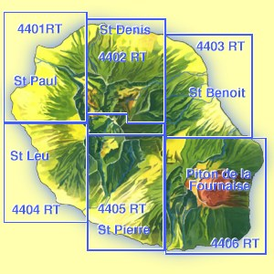
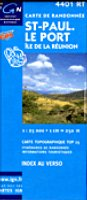
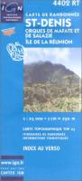
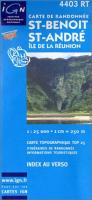
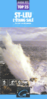
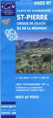
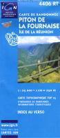

L'Institut Géographique National édite et met à jour régulièrement huit cartes de la R≈union. Une carte routière et touristique très complète et six cartes de randonnée, ( anciennement appelées cartes TOP25 et encore avant « série bleue ») qui dévoilent jusqu'aux moindres recoins de l'île avec leur échelle très détaillée au 25.000ème.

Carte touristique de la Réunion
 Carte touristique et routière de l'île de la Réunion. L'essentiel s'y trouve sur une carte au 1/750.000e très lisible et trěs précise, elle convient aussi bien aux voyages en voiture qu'en randonnée pédestre. S'il ne vous en faut qu'une seule, alors c'est celle ci.
Carte touristique et routière de l'île de la Réunion. L'essentiel s'y trouve sur une carte au 1/750.000e très lisible et trěs précise, elle convient aussi bien aux voyages en voiture qu'en randonnée pédestre. S'il ne vous en faut qu'une seule, alors c'est celle ci.
{% fnac "ign-touristique", "https://livre.fnac.com/a8947140/Collectif-La-Reunion" %}
Carte touristique - mini Réunion
Très pratique cette carte est la même que sa grande sœur mais plus petite. Elle a la taille d'un petit portefeuille et détaille toujours toute l'île de la réunion bien qu'un peu moins détaillée au 100.000e Elle était bon marché mais elle est hélas épuisée, vous pouvez écrire à l'IGN pour leur demander de la rééditer ou tenter d'en trouver une d'occasion.
{% fnac "mini-reunion", "https://livre.fnac.com/a1450289/Collectif-Mini-reunion" %}
Saint Paul - Le Port

Carte de la zone balnéaire de l'île avec la cote ouest et les hôtels le long du lagon à Saint-Gilles. Au nord du lagon, on trouve le Port et la Possession, zones d'activités, le deuxième poumon économique de l'île après la capitale Saint-Denis.
Lieux : La possession, Le bois de Nefles, L'etang, Boucan Canot, Saint Gilles les Bains, l'Hermitage les Bains, la Saline les Bains, Saint Gilles les hauts, la Saline les hauts, Trois Bassins, Maïdo, Petite France, îlet Lauret.
{% fnac "4401RT", "https://livre.fnac.com/a2843734/Collectif-Saint-Paul-le-port" %}
Saint Denis

Saint Denis est la capitale de l'île et la plus grande ville de la zone. La carte détaille toute sa banlieue et surtout l'arrière pays très riche et les cirques de Mafate et de Salazie avec ses chemins de grande randonnée (GR R1 et GR R2) et ses refuges.
Lieux : La Montagne, le Brûlé, Sainte Clotilde, la Bretagne, Saint François, la Rivière des pluies, Sainte Marie, Aéroport de Gilots Rolland Garros, Cirque de Mafate, Cirque de Salazie, Hell Bourg, Salazie, Grand Ilet, la plaine des Fougères, la Roche écrite, la Plaine d'Affouche, le grand Morne...
{% fnac "4402RT", "https://livre.fnac.com/a2843735/Collectif-Saint-Denis" %}
Il existe aussi un exemplaire « résistant » de cette carte. Imprimé recto-verso et plastifié:
{% fnac "4402RT-R", "https://livre.fnac.com/a14008377/Collectif-Saint-Denis" %}
Saint Benoit - Saint André

L'Océan Indien occupe presque la moitié de cette carte mais la partie terrestre est la plus intéressante. Cette partie de l'île est très luxuriante et sauvage. C'est la partie de l'île la plus prisée des amateurs de canyoning dans les nombreuses gorges de la rivière du Mât venant de Salazie où de la rivière des Marsouins.
Lieux : Sainte Suzanne, Bois Rouge, Quartier Français, Cambuston, le Colosse, Champ Borne, l'étang, Bras des Chevrettes, Rivière du Mât, Rivière des roches,Bras panon, Abondance, Bras Canot, forêt des Ravenales, Takamaka, Beaufonds Confiance, Saint Anne Sainte Rose, la Plaine des Palmiste, Station de VTT Goyavier...
{% fnac "4403RT", "https://livre.fnac.com/a2843736/Collectif-Saint-Benoit-Saint-Andre" %}

Saint Leu - L'étang Salé
C'est la partie de l'île la plus sêche avec un bord de mer aride. De grandes plantations de canne à sucre un peu plus haut et au-delà des forêts de tamarins.
Lieux : La forêt domaniale des Bénares, la forêt du Tevelave,
la forêt maritime de l'étang Salé, le plateau du Gol,
L'étang Salé, Les Avirons, Saint Leu, La Saline.
Photo: Le souffleur par Bernard André. Le Souffleur est le nom de deux sites remarquables ou la mer en furie se bat constamment avec les rochers. L'un de ces sites est plus connu sous l'appellation du Gouffre.
{% fnac "4404RT", "https://livre.fnac.com/a2843737/Collectif-Saint-Leu-L-Etang-Sale" %}
Saint Pierre

Saint Pierre est la deuxième ville de l'île, la capitale du sud. C'est un secteur de l'île a ne pas manquer avec sa plage et sa vielle ville. Il y a aussi le Tampon et la route qui monte vers le volcan, Cilaos et ses sources thermales. tout le charme de la Réunion est là.
Lieux : Cirque de Cilaos, Entre Deux, le Tampon, la Plaine des Cafres, Saint Louis, Aéroport de Pierrefonds, Entre-Deux, Bois d'Olive, Ravine des Cabris, la Rivière, le Gol, Grand Bassin, Ilet à Cordes, Ilet du Palmiste, Bois Court, Bourg Murat, Montvert les Bas, Manapagny les Bains, Grand Anse, Grands Bois...
Photo : La Plaine des Cafres, par Loïc Daniel (IGN)
{% fnac "4405RT", "https://livre.fnac.com/a2843738/Collectif-Saint-Pierre" %}
Piton de la Fournaise

La partie la plus sauvage de l'île et aussi la moins
peuplée. Cette carte est fameuse parce que c'est celle du
volcan, elle est régulièrement mise à jour
comme les autres mais les mises à jour sont remarquables car
elles prennent en compte de grands changements topographiques et
même côtiers à cause des coulées de
lave. On y trouve aussi une bonne partie du Parc National de la Réunion.
Lieux : Saint Joseph, Saint Philippe, Petite île, tous les cratères du volcan et le
Grand brûlé, la route des laves, les différentes coulées de lave,
les hauts de Sainte Rose, l'Anse des Cascades, Bois Blanc, la
Pointe de la Table...
Photo :Ci-contre : Barrière surplombant la rivière des remparts, par
Laurent Queyroi (IGN). La carte actuelle montre le volcan et une
éruption de lave.
{% fnac "4406RT", "https://livre.fnac.com/a2843739/Collectif-Piton-Fournaise" %}